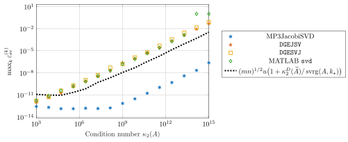

Computing accurate singular vectors and eigenvectors using mixed-precision Jacobi algorithms
Françoise Tisseur, Marcus Webb, and I have uploaded to the arXiv our paper "Computing accurate singular vectors and eigenvectors using mixed-precision Jacobi algorithms". It extends our earlier work on computing accurate eigenvalues and singular values to the corresponding vectors. MATLAB code is on GitHub.
In this post, we focus on the singular vector results, since the eigenvector counterpart for symmetric positive definite matrices is similar.
Accuracy of the computed vectors
This paper builds on the result of Demmel and Veselić on the high accuracy of the Jacobi algorithm. For a full-rank matrix \(A\in\mathbb{R}^{m\times n}\), with \(m\ge n\) and distinct singular values, let \(v_k(A)\) denote the right singular vector associated with the \(k\)-th largest singular value, and \(\widehat v_k(A)\) its computed counterpart. The one-sided Jacobi algorithm admits a bound of the form
\[\sin\angle\big(v_k(A),\widehat v_k(A)\big) \le p(m,n)\,u\,\frac{\kappa_2^D(A)}{\mathrm{svrg}(A,k)},\]where \(p(m,n)\) is a low-degree polynomial, \(u\) is the unit roundoff of the working precision, and \(\kappa_2^D(A)\) is the condition number after scaling the columns of \(A\) to unit norm. The angle is between the one-dimensional subspaces spanned by the two vectors, so the error does not depend on their signs. The quantity \(\mathrm{svrg}(A,k)\) is the relative gap between the \(k\)-th singular value and the other singular values.
For algorithms based on bidiagonalization, the corresponding error bounds involve absolute gaps. Relative gaps can be much larger near the small singular values. For example, if the singular values are \(1,10^{-1},\ldots,10^{-9}\), the absolute gap between \(10^{-8}\) and \(10^{-9}\) is \(9\times10^{-9}\), while the relative gap for \(10^{-8}\) is \(0.9\).
The factor \(\kappa_2^D(A)\) can nevertheless be large. Our earlier work replaced it by the scaled condition number of a preconditioned matrix in the bounds for singular values. In this paper, we show that the same improvement holds for singular vectors.
Our algorithm
We first construct a preconditioner \(\widetilde V\) from right singular vectors computed at low precision, then orthogonalize it at working precision. We form \(\widetilde A=A\widetilde V\) at high precision, round it to working precision, and apply the one-sided Jacobi algorithm at working precision. The right singular vectors are then obtained by transforming the computed vectors back using \(\widetilde V\).
Compared with our previous algorithm, the Jacobi step is applied to the transpose of the preconditioned matrix. This modification simplifies the analysis. Under the assumptions in the paper, the computed singular vectors satisfy
\[\sin\angle\big(v_k(A),\widehat v_k(A)\big) \le p_4\,u\left(1+\frac{\kappa_2^D(\widetilde A)}{\mathrm{svrg}(A,k)}\right),\]where \(p_4\) is a dimension-dependent constant defined in the paper. The same bound holds for the left singular vectors.
Through this procedure, \(\kappa_2^D(A)\) is replaced by \(\kappa_2^D(\widetilde A)\), which is often much smaller. If \(\widetilde V\) were the exact right singular vector matrix, the columns of \(\widetilde A\) would be orthogonal and its scaled condition number would be one. The relative gap in the bound remains that of \(A\), so the separation of the singular values still determines the sensitivity of the vectors.
For symmetric positive definite matrices, we apply the two-sided Jacobi algorithm to \(\widetilde A=\widetilde Q^T A\widetilde Q\). We obtain an analogous eigenvector bound involving the scaled condition number of \(\widetilde A\) and the relative eigenvalue gaps of \(A\).
Why high precision?
A key feature of our algorithms is the use of high-precision matrix–matrix multiplication. With sufficiently high precision, we can control the componentwise forward errors that arise when forming the preconditioned matrix. Forming it at working precision alone may lose the accuracy gained from preconditioning. The Jacobi iterations and the final transformation of the vectors are carried out at working precision.
Numerical experiment
We compare MP3JacobiSVD with the LAPACK routines DGESVJ and DGEJSV and with MATLAB svd. The test matrices are generated by
gallery('randsvd', [m,n], kappa, 3);
with \(m=1000\), \(n=800\), and condition numbers from \(10^3\) to \(10^{15}\). The singular values are geometrically distributed. We use single, double, and simulated quadruple precision as the low, working, and high precision, respectively.

The results show that our algorithm performs especially well for these ill-conditioned matrices. At \(\kappa_2(A)=10^9\), its largest vector error is below \(10^{-12}\), while the other methods have errors of order \(10^{-7}\). At \(\kappa_2(A)=10^{15}\), its largest error is about \(2\times10^{-7}\), whereas the worst vector computed by MATLAB svd is almost orthogonal to the exact one.
The eigenvector results are similar. For \(\kappa_2(A)=10^{15}\), MP3Jacobi gives a largest error of about \(5\times10^{-8}\), compared with \(6\times10^{-2}\) for MP2Jacobi, which forms the preconditioned matrix at working precision.
Each curve reports the largest vector error for the corresponding method. The dotted line evaluates our bound expression with an empirically chosen constant. Some of the most ill-conditioned matrices do not satisfy the assumptions of the theorem; these tests show the behaviour of the algorithm outside our theory.
For arithmetically distributed singular values or eigenvalues, MATLAB svd and eig give smaller errors in our tests. Our algorithms are most effective for ill-conditioned matrices with small absolute gaps but moderate relative gaps.
In this work, we consider only distinct eigenvalues and singular values. Extending the analysis to repeated values requires comparing subspaces, which we leave for future work. The full assumptions and further experiments are in the paper.